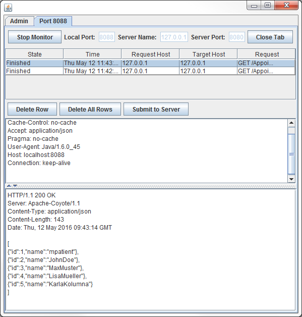

Listing all patients in JSON (Method GET)

Topic content
In this chapter we will create a Orchestra REST Client implementation to request a list of all patients IN JSON FORMAT and save the list to your File system. According to 3.3.3 Listing all patients in JSON (Method GET) we request the appointmentService by using the URL
http://localhost:8080/AppointmentMgr/appointments/patients
1.Copy your shell scenario from chapter 4.5.1 Preparation.
2.Open your process model.
3.Add the Rest Service Client and a call activity to your process model.
4.Link all elements in your modell.

Figure 69 – Listing all patients in JSON – Process Modell
5.Now you can configure the the AppointmentMgr-Service.
As an additional information for telling the server, which format you expect, you have to set the Accept-Parameter in the Header of the Request.
Figure 70 – Listing all patients in JSON – REST-Service Method Request Configuration
6. Open the register Service method and select the GET-Method for /appointments/patients.
7.Assign the Response MSG of the call to the CURMSG of the process modell.
8.Assign the Accept-Header Parameter “application/json”.
Figure 71 – Listing all patients in JSON – Call configuration
9.Open your file-writer-Channel and set the Serializer to json writer.
Figure 72 – Listing all patients in JSON – file-writer-Channel configuration
10.Start your Test-Engine, and have a look at your result-File.
File Content |
{ "array": [ { "id": "1", "name": "mpatient" }, { "id": "2", "name": "JohnDoe" }, { "id": "3", "name": "MaxMuster" }, { "id": "4", "name": "LisaMueller" }, { "id": "5", "name": "KarlaKolumna" } ] } |
If you compare your TCPMon trace with the trace from chapter 3.3.3 Listing all patients in JSON (Method GET) you can see that Orchestra produces an identical trace up to application-specific header informations.

Figure 73 – TCPMon Trace: Listing all patients in JSON
Request |
Response |
GET /AppointmentMgr/appointments/patients HTTP/1.1 Cache-Control: no-cache Accept: application/json Pragma: no-cache User-Agent: Java/1.6.0_45 Host: localhost:8088 Connection: keep-alive
|
HTTP/1.1 200 OK Server: Apache-Coyote/1.1 Content-Type: application/json Content-Length: 143 Date: Thu, 12 May 2016 09:46:49 GMT [ {"id":1,"name":"mpatient"}, {"id":2,"name":"JohnDoe"}, {"id":3,"name":"MaxMuster"}, {"id":4,"name":"LisaMueller"}, {"id":5,"name":"KarlaKolumna"} ] |